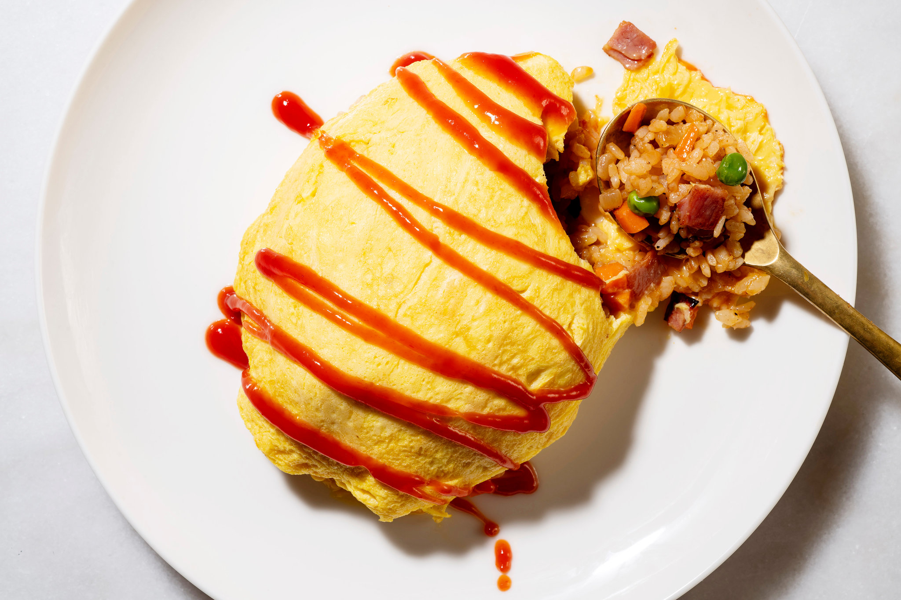

<
Culinary Japan
Ramen Recipe
 ramen
ramen
Ingredients:
- 200g ramen noodles
- 1 liter chicken or vegetable broth
- 1 tablespoon soy sauce
- 1 tablespoon miso paste
- 2 garlic cloves, minced
- 1 teaspoon ginger, grated
- 2 green onions, sliced
- 1 egg, soft-boiled (optional)
- 1 cup sliced mushrooms
- 1 cup bok choy or spinach
- Sesame seeds (for garnish)
Instructions:
- In a large pot, heat a bit of oil and sauté the garlic and ginger until fragrant.
- Add the broth, soy sauce, and miso paste. Bring to a simmer.
- Add the mushrooms and cook for about 5 minutes.
- Cook the ramen noodles according to package instructions and set aside.
- Add the bok choy or spinach to the broth and cook for 2-3 minutes until wilted.
- Divide the cooked noodles into bowls. Ladle the hot broth and vegetables over the noodles.
- If using, top with a soft-boiled egg and sprinkle with sesame seeds.
- Serve hot and enjoy your homemade ramen!
Udon Recipe
 udon
udon
Ingredients:
- 250g udon noodles
- 1 liter dashi broth (or chicken/vegetable broth)
- 2 tablespoons soy sauce
- 1 tablespoon mirin (optional)
- 2 green onions, sliced
- 1 cup sliced mushrooms (shiitake or enoki)
- 1 cup spinach or bok choy
- Tempura flakes (for garnish)
Instructions:
- Cook the udon noodles according to package instructions. Drain and set aside.
- In a pot, combine the dashi broth, soy sauce, and mirin. Bring to a simmer.
- Add the mushrooms and cook for about 5 minutes.
- Add the spinach or bok choy and cook until wilted.
- Divide the cooked udon noodles into bowls and ladle the hot broth and vegetables over them.
- Garnish with sliced green onions and tempura flakes. Serve hot!
Castella Recipe
 castella
castella
Ingredients:
- 4 large eggs
- 120g sugar
- 120g all-purpose flour
- 50ml honey
- 50ml milk
- 1 teaspoon vanilla extract
Instructions:
- Preheat the oven to 170°C (340°F) and line a loaf pan with parchment paper.
- In a bowl, beat the eggs and sugar until thick and pale.
- Sift the flour and gently fold it into the egg mixture.
- Add honey, milk, and vanilla extract. Mix until smooth.
- Pour the batter into the prepared loaf pan and bake for 30-40 minutes, or until a skewer comes out clean.
- Let it cool before slicing. Enjoy your castella!
Tempura Recipe
 tempura
tempura
Ingredients:
- 200g shrimp (peeled and deveined)
- 1 zucchini, sliced
- 1 sweet potato, sliced
- 1 cup all-purpose flour
- 1 cup cold water
- Oil for frying
- Tempura dipping sauce (optional)
Instructions:
- Heat oil in a deep pot to 180°C (350°F).
- In a bowl, mix flour and cold water to make a batter. Do not overmix.
- Dip shrimp and vegetables into the batter, then carefully place them into the hot oil.
- Fry until golden brown and crispy, about 2-3 minutes.
- Remove and drain on paper towels. Serve with tempura dipping sauce.
Sushi Recipe
 sushi
sushi
Ingredients:
- 2 cups sushi rice
- 2 1/2 cups water
- 1/4 cup rice vinegar
- 2 tablespoons sugar
- 1 teaspoon salt
- Seaweed sheets (nori)
- Fillings (cucumber, avocado, raw fish, etc.)
Instructions:
- Rinse sushi rice under cold water until water runs clear. Cook with water in a rice cooker.
- Mix rice vinegar, sugar, and salt in a small bowl until dissolved.
- Once rice is cooked, transfer to a bowl and gently mix in the vinegar mixture.
- Lay a seaweed sheet on a bamboo mat, spread rice evenly, and add desired fillings.
- Roll tightly and slice into bite-sized pieces. Serve with soy sauce.
Dango Recipe
dango
Ingredients:
- 200g sweet rice flour (mochi flour)
- 180ml water
- 100g sugar
- For sauce: 4 tablespoons soy sauce, 4 tablespoons sugar, 4 tablespoons water
Instructions:
- Mix sweet rice flour and water until a smooth dough forms.
- Divide the dough into small balls and shape them onto skewers.
- Boil in water for about 5-7 minutes until they float. Remove and cool.
- In a small pot, combine soy sauce, sugar, and water for the sauce. Heat until sugar dissolves.
- Brush the sauce over the dango before serving.
Teriyaki Chicken Recipe
teriyaki chicken
Ingredients:
- 500g chicken thighs, boneless and skinless
- 2 tablespoons soy sauce
- 2 tablespoons mirin
- 1 tablespoon sugar
- 1 tablespoon sesame oil
- Green onions (for garnish)
Instructions:
- In a bowl, mix soy sauce, mirin, and sugar to make the teriyaki sauce.
- Heat sesame oil in a pan over medium heat. Add chicken and cook until browned on both sides.
- Add the teriyaki sauce and simmer until the chicken is cooked through and the sauce thickens.
- Slice the chicken and serve with sauce drizzled over it. Garnish with green onions.
Omuraisu Recipe

omuraisu
Ingredients:
- 2 cups cooked rice
- 1 onion, chopped
- 1 carrot, diced
- 1 cup cooked chicken, diced
- 2 eggs
- 2 tablespoons ketchup
- Salt and pepper to taste
- Butter for cooking
Instructions:
- In a pan, heat butter and sauté onion and carrot until soft.
- Add chicken, cooked rice, ketchup, salt, and pepper. Mix well and cook until heated through.
- In a separate pan, scramble the eggs until just set but still soft.
- Place the rice mixture on a plate and fold the scrambled eggs over it.
- Serve with extra ketchup drizzled on top. Enjoy your omuraisu!